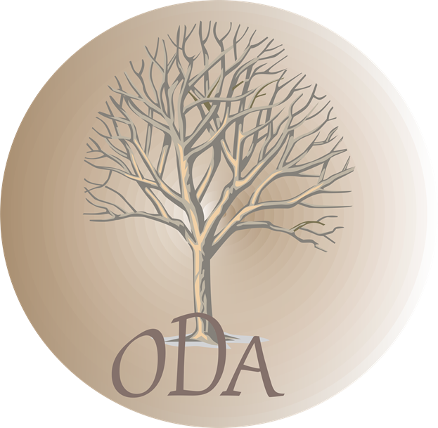

Olieven Development Association is an NPO that was founded in 2009 with the aim to be a positively influential organization that supports the general well-being of community members through basic social services, entrepreneurial skills, and personality development to reduce the suffering of the most vulnerable group by providing them with tools and skills so that they can stand on their feet.
To be a leading organization in facilitating and creating sustainable opportunities for communities.
To provide opportunities for youth through skills development, health, social behaviour change, economic and poverty alleviation programs.
We believe in honesty, transparency, fairness, and service delivery to our communities.
We provide service for poverty alleviation and youth development within the community of Olievenhoutbosch, Laezonia, and Mooiplaas with the aim of strengthening service delivery goals as per the National development plan vision.
Explore free courses and tutorials to strengthen your skills.